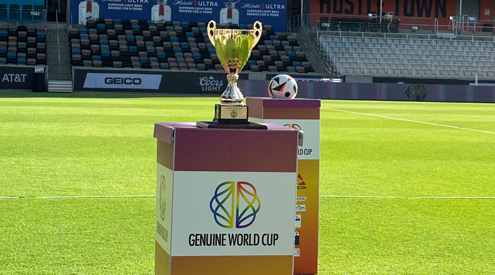
After a first edition full of great moments, where Barcelona won the championship, everything is ready for the next edition of the...Genuine World Cup.
For the second consecutive year, the tournament will be held in Houston from July 29th to August 1st. Follow our social networks for all the details and latest news, we'll have many surprises. See you soon!
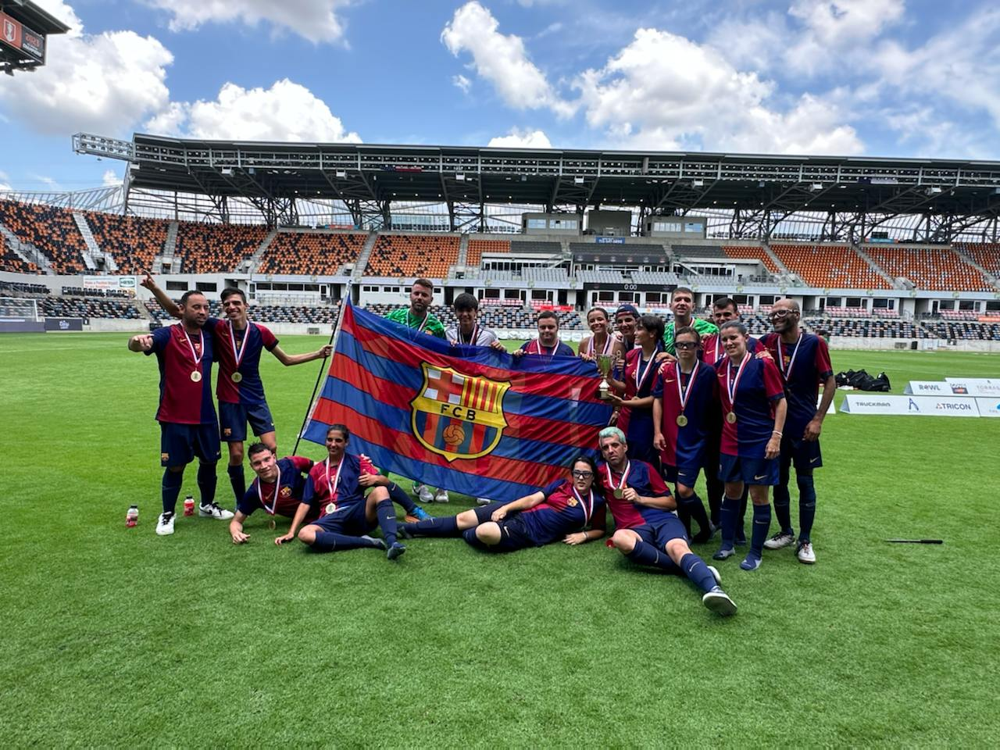
The trophy of the first edition of the Genuine World Cup 2024 went to Barcelona, which throughout the tournament ...showed its experience and quality on and off the pitch. The blaugrana team beat Sporting Portugal in their last match, who also had a great performance in all their matches.
A special mention must go to Athletic Club, who with their players, coaches and fans were in charge of filling with energy and happiness all those who were part of this tournament. We can't wait for a new edition of this tournament and continue enjoying these great athletes.
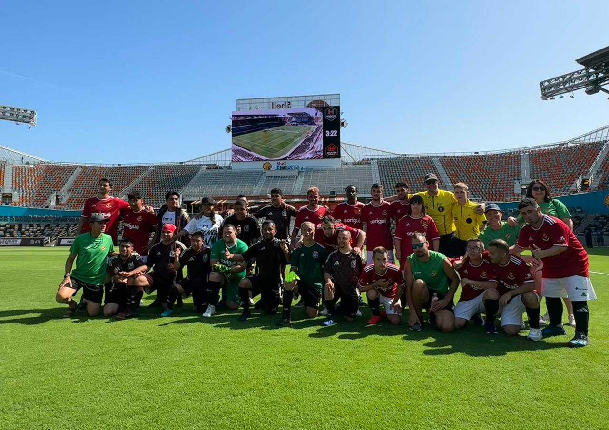
The Genuine World Cup 2024 came to an end and it did so in a great way, as the Final Stage matches were held at Shell Energy ...Stadium, home of Major League Soccer's Houston Dynamo.
The participating teams had a great experience playing their games at this stadium, which received many fans willing to support all the teams and have a great time.
At the end of the event all the teams were able to parade with their flags, hear the names of the players of each team from an announcer and receive a medal for their great participation in the tournament. Lots of goals, lots of friends and an experience in Houston that will last a lifetime.
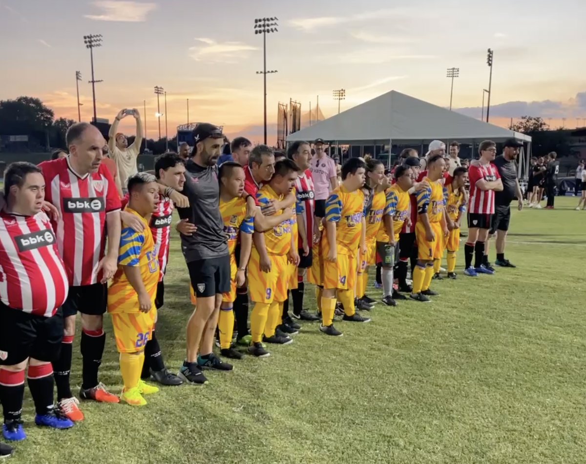
The second day of action of the Genuine World Cup 2024 was filled with emotions since early in the morning with the first leg matches, but the best ...was yet to come with the afternoon duels.
After games with lots of goals, fun and fellowship, the day ended with a thrilling finale, as several rounds of penalty kicks were held between all participating teams, a moment that all fans and teams enjoyed to the fullest.
The matches for the finals stages were defined and all participants and fans will continue to enjoy this great tournament that has united 12 teams from four different countries.
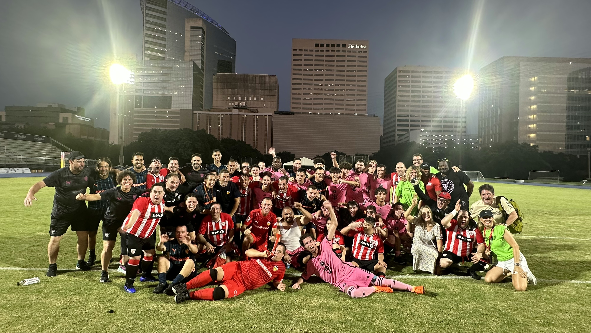
With a great atmosphere on the soccer fields of Rice University, the Genuine ...World Cup 2024 kicked off with many goals, but above all with great camaraderie.
The European teams showed their great experience on the field and started their participation in this competition with a victory. But the most important thing was the great atmosphere among all the participants to support each other at all times.
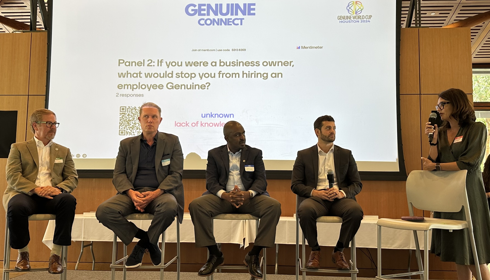
As part of the Genuine World Cup 2024 activities, Rice University served as the venue for the Genuine Connect ...event, where several experts shared their success stories and discussed the challenges and opportunities for athletes with autism and intellectual and developmental disabilities (IDD).
Through innovative programs, advocacy, and community engagement, the Genuine Foundation is committed to fostering inclusion and empowerment to build a more inclusive future. Thank you to all who participated in this event full of inspiring stories.
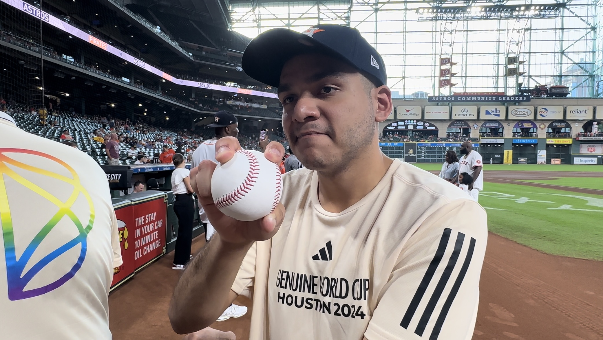
The teams who will participate in the Genuine World Cup had the opportunity to visit Minute Maid Park to enjoy a Houston Astros game. ...Dancing, fun and food were the main elements for this great experience for the players.
One of the most exciting moments of the night was when a Houston Dynamo player threw out the first pitch and met Astros infielder Aledmys Diaz.
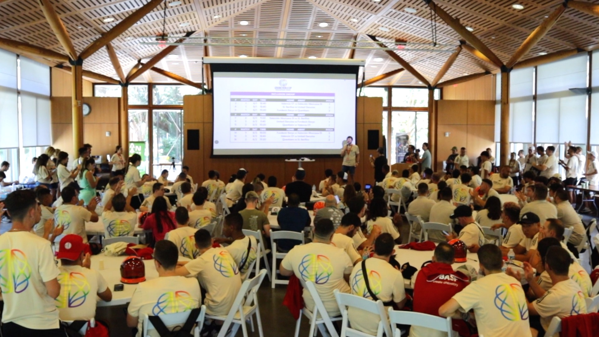
The Genuine World Cup draw happened this afternoon at Rice University with the presence of all teams. ...There was a lot of excitement during the event as teams were allocated in two groups as follows:
Diversity Group: Dynamo, Athletic Club, Nástic, Inter Miami, Tigres, Sporting
Inclusion Group: Valencia, Barça, United Genuine, Selección Mexicana DI, Querétaro, Benfica
Kickoff is Thursday at 6pm local time.
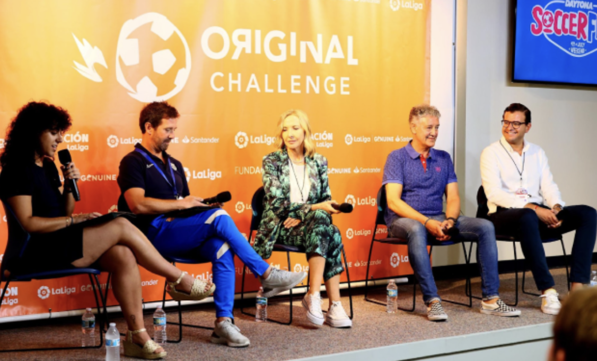
Join us this Thursday morning at Rice University for a day centered around inspiration, collaboration, and innovation. ...This unique event aims to facilitate meaningful dialogue and share valuable insights on the inclusion and empowerment of athletes with intellectual and developmental disabilities (IDD) and autism.
Through engaging panel discussions, networking opportunities, and interactive sessions, we are dedicated to creating a platform where ideas can flourish and impactful connections can be made.
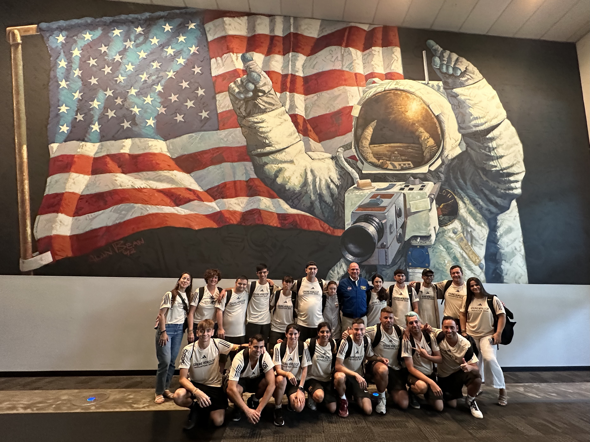
All teams and players had a great experience at NASA's Johnson Space Center, where they were welcomed by former astronaut Anthony ...Antonelli, who shared his experiences and took pictures with them.
With fun dynamics and lots of emotion players enjoyed all that Space Center Houston has to offer and learned more about space.
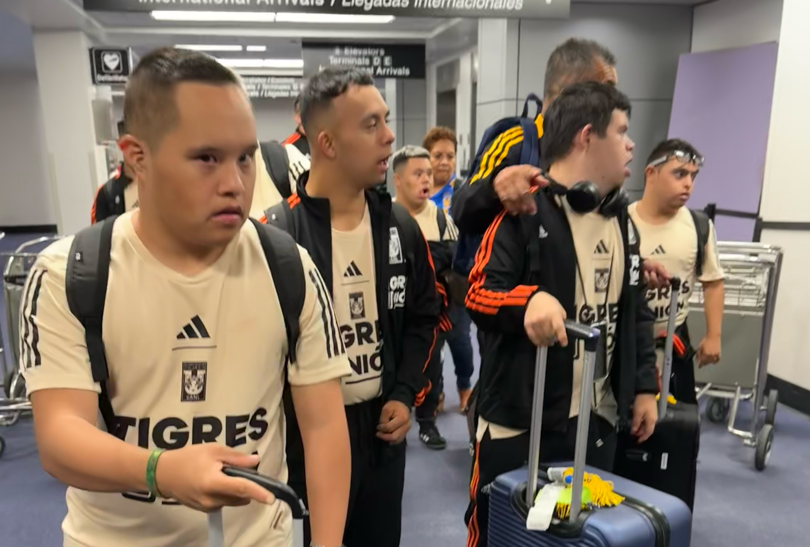
All 12 teams are here! Coming from Mexico, Spain, Portugal and Miami, all delegations arrived on ...Tuesday and have already checked-in at Rice University and ready for a week of fun, soccer and lots of memories.